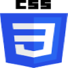
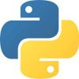
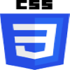
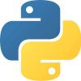

Compétences :
-Compétences informatiques
-Capacité d’adaptation
-Ponctualité
-Sens des responsabilités
Logiciels :
 



Expériences :
-Avril 2021: Préparateur D’OF (Ordre de Fabrication)
2 semaines au sein de la société CAMECA en tant que Préparateur D’OF (Ordre de Fabrication).
Je recevais une liste de pièces que je devais prélever pour les envoyer dans la chaîne de montage.
j'ai aussi ranger les pièces commandées à leur place dans l'inventaire et d'autre tache divers comme signaler les pièces manquantes, organiser celle qui n'étais pas à leur place ou à rajouter les pièces manquantes dans les OF incomplets.
Etudes :
-Octobre 2021 - Juin 2023: BTS Services Informatiques aux Organisations
Option Solutions d'Infrastructure, Systèmes et Réseaux (SISR).
Apprentissage en HTML, Java, SQL et Reseaux. Etude de la culture économique, juridique et managériale.
-Septembre 2018 - Juin 2021 : Baccalauréat General
Spécialités Numérique et Science Informatique (NSI)
● Les données, les algorithmes, les langages (Python)
Spécialités Science de l’Ingénierie (SI)
● Projet de boite aux lettres connectées
Loisirs :
-Lecture (Roman, BD, Manga)
-Ecouter de la musique